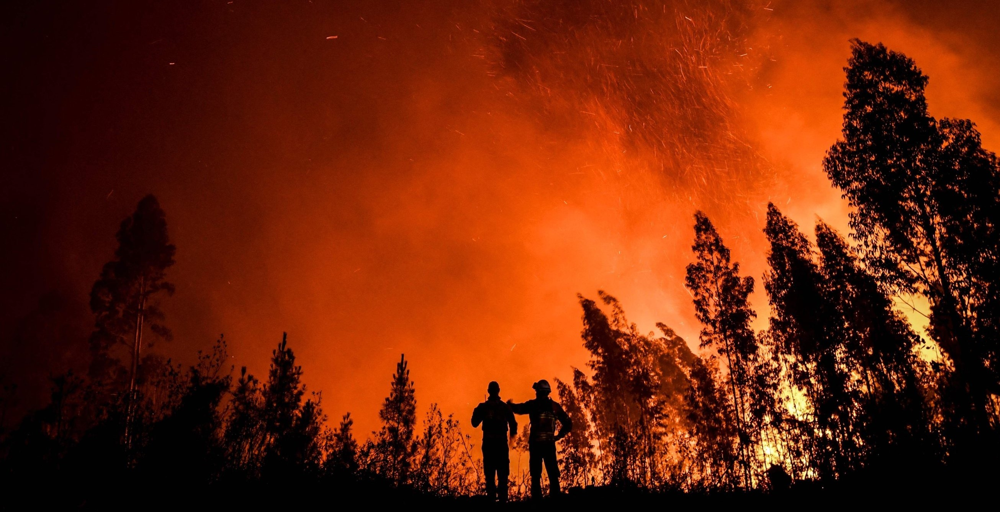

The issue of global warming has been circulating for several decades, but its consequences have been alarming in recent years, which is when people have decided to take a considerable look at the problem itself, which is primarily caused by the combustion of fossil fuels and a variety of activities that increase carbon dioxide emissions into the atmosphere.
Which ends up causing many natural disasters such as melting glaciers, slowing the development process for many countries, destroying biodiversity in biomes, and affecting government and citizen's lives in particular. Burning fossil fuels causes the "greenhouse effect" in the Earth's atmosphere, with the main effect being a gradual rise in global temperature over time.